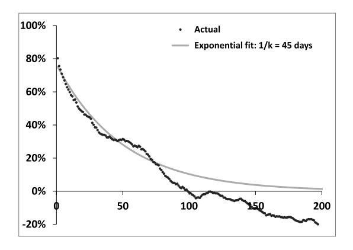
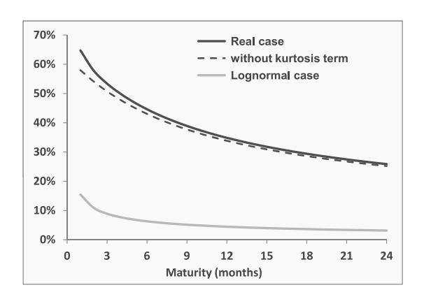
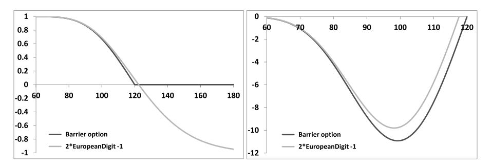

第一章：导论
——为什么需要随机波动率模型？
本笔记基于 Bergomi《Stochastic Volatility Modeling》第一章，按原书行文结构整理，兼顾数学推导的经济直觉与实务启发。
目录
- 核心问题的提出
- Black-Scholes 方程的损益会计推导（§1.1）
- Delta 对冲的有效性（§1.2）
- 走向随机波动率（§1.3）
- 两个示例：精确定位波动率风险（§1.3.1–1.3.2）
- 全章总结
1. 核心问题的提出
Bergomi 在开篇抛出了一组根本性的问题：交易员为什么要使用随机波动率模型？它解决了什么问题？为什么仅靠 Delta 对冲是不够的？
全章的论证分三个层次递进。第一层揭示 Black-Scholes 方程的本质——它是一个损益会计工具，而非对标的资产动态的刻画。第二层用具体计算证明，纯 Delta 对冲在真实市场中无法将 P&L 风险控制在可接受范围内。第三层说明，一旦引入期权作为对冲工具，就必须为隐含波动率的动态建模——这正是随机波动率模型的任务所在。
视角前提：模型的价值不在于对标的资产历史动态的拟合精度，而在于能否为对冲头寸提供一套自洽的 P&L 分解框架。计量经济学家基于拟合优度批评 Black-Scholes 模型，但这种"规范性思维"在交易实践中并不适用——真实资产的动态不规则，无法被任何单一模型精确刻画，且交易员必须在期权市场价格下动态交易，而非坐等到期收益。
2. Black-Scholes 方程的损益会计推导（§1.1）
2.1 问题设定
假设交易台上的量化团队提供了一个期权定价函数 ，我们作为风险管理者，不知道其内部实现，如何判断它是否适合用于风险管理？
第一个检验：到期条件必须满足
通过这一检验后，考察 Delta 对冲头寸的 P&L。
2.2 P&L 的推导
在 区间内，卖出期权并用 份标的资产对冲，P&L 由两部分构成——期权空头本身的损益（含期权费的利息收入）以及 Delta 对冲头寸的损益（含借款成本和持股收益）：
选取 消去 的一阶项。由于收益率方差近似与时间尺度成正比（即回报无序列相关），有 ，因此 ，交叉项 在 时可忽略。展开至 一阶、 二阶，得到持仓损益（carry P&L）：
各项的经济含义：
- 中的三项分别对应：期权的时间衰减 、期权费的利息收入 、Delta 对冲头寸的融资净成本 。 是确定性的。
- 是美元 Gamma，乘以日对数收益率平方 ，构成随机损益项。
简记为：
2.3 模型可用性条件
由于 Gamma 项是随机的，P&L 无法精确为零。分析 、 符号的三种情形：
| 结果 | 判断 | ||
|---|---|---|---|
| 无论 如何，持续亏损 | 定价过低，模型不可用 | ||
| 无论 如何，持续盈利 | 定价过高，模型不可用 | ||
| 异号 | 异号 | 存在盈亏平衡水平 | 模型可用 |
与 异号是模型可用的必要条件。此时盈亏平衡收益率水平为 。
进一步引入一个自然的风险管理准则——平均不盈不亏：设 为标的历史波动率（），要求
代入 、 的表达式，即得到 Black-Scholes 方程：
将此条件代回式（1.2），得到全书最核心的损益公式：
公式（1.5）的直觉极为清晰：Delta 对冲后的日 P&L，完全由实现方差与隐含方差之差决定，权重是期权的美元 Gamma。Gamma 为正（多 Gamma）时，若实现波动率超过隐含波动率则盈利；Gamma 为负（空 Gamma）时方向相反。
推导方向的颠覆性：这个论证从损益会计出发，无需任何关于布朗运动或对数正态分布的假设，自然导出了 Black-Scholes 方程（1.4）。方程（1.4）恰好是抛物型 PDE，存在概率论解释（解可写为扩散过程 下收益的期望值），但这是数学上的对应，不是建模的起点。
2.4 多资产情形推广
当使用多个对冲工具时，定价函数为 ，P&L 推广为：
对 （实对称矩阵）做特征值分解 ，令 （），Gamma 项对角化为 ，将多资产问题还原为若干单资产 P&L 之和：
模型可用等价于存在正数 使得 。令 （ 为以 为对角元的矩阵），则 是正定矩阵，且：
P&L 可写成对称形式：
是对冲工具 和 的隐含协方差盈亏平衡水平， 是正定的隐含协方差矩阵。反之，可以证明对任意正定矩阵 ，均有 ，因此 的选取无约束。
市场模型（market model）的定义：满足上述条件（存在正定 使得 Theta 与所有交叉 Gamma 通过 关联）的模型称为市场模型。需注意，交叉 Gamma 涉及的是对实际对冲工具价值的导数，而非模型特有的状态变量。后文将证明：局部波动率模型（第2章）、远期方差模型（第7章）是市场模型；大多数局部随机波动率模型（第12章）则不是。
3. Delta 对冲的有效性（§1.2）
3.1 问题设定
公式（1.5）量化了日 P&L，但单日 P&L 并非真正的风险暴露——交易员关心的是期权整个存续期内累积 P&L 的分布。具体地：均值需接近零（否则定价有偏），标准差则量化了实际风险敞口的大小。
期权整个生命周期内的折现总 P&L（每日对冲一次， 天）：
其中 为日收益率。若未来平均实现波动率与 相符，则总 P&L 均值为零；关键在于标准差的大小。
3.2 P&L 方差的分解推导
简化假设：将折现美元 Gamma 近似为常数（取初始值 ），消去一个随机性来源。
将日收益率分解为：
其中 ，， 独立同分布且与 相互独立。这一分解将波动率集群效应（ 的相关性）与收益率分布形态（ 的峰度）分离开来。
总 P&L 的核心随机量为 ，对其方差展开：
对角项（）：利用 、，
非对角项（）：利用 独立且 ，
汇总得到方差表达式：
其中三个关键参数为：
| 参数 | 定义 | 含义 |
|---|---|---|
| （超额峰度） | 日收益率厚尾程度 | |
| 日波动率的相对方差（vol of vol） | ||
| 日方差的自相关函数 |
利用 Black-Scholes 中 Vega 与 Gamma 的关系 （式1.12），P&L 标准差归一化为 Vega 的倍数：
右侧可理解为：使期权价格产生一个 P&L 标准差变动所对应的隐含波动率相对扰动幅度。对于平值期权（价格 的线性函数），它也近似等于 。
3.3 Black-Scholes 情形（§1.2.1）
在 BS 框架下，（常数），故 ；日收益率可视为高斯分布（ 时正态近似成立），故 。式（1.13）简化为：
其中 为对冲次数。这一结果有清晰的统计解释： 恰好是历史波动率估计量 的相对标准差（在正态日收益率假设下，，对应波动率估计量的相对标准差约为 ）。因此：
Delta 对冲 P&L 的标准差 = 期权 Vega × 基于相同对冲频率的历史波动率估计量的标准差。
数值示例：一年期平值看涨期权，，，， 个交易日：
5% 的相对标准差看似合理，但真实市场的情况大相径庭。
3.4 真实市场情形（§1.2.2–1.2.3）
Bergomi 基于欧洲金融股的高频数据（5分钟收益率，2008–2010年），估计波动率自相关函数 ：

图 1.1：日波动率自相关函数 ， 单位为交易日。
衰减缓慢，可用指数函数拟合：，参数估计为 ， 天（半衰期约 45 个交易日）。代入典型参数（，取 ；），得到：
图 1.2 给出了三条曲线的对比：

图 1.2：式（1.16）右侧随到期期限的变化（深色实线），与不含峰度项的情形（虚线）及纯 Black-Scholes 情形（浅色线）的对比。
对比结果：同一个一年期平值期权，真实情形的 P&L 标准差约为期权费的 35%（约 2.8%），Black-Scholes 情形仅为 4.5%（约 0.36%），相差近 8 倍。
从图 1.2 的深色线与虚线之差可见，除极短期限外，P&L 离散性的主要来源是波动率自相关（ 项），而非收益率厚尾（ 项）。其物理机制：若某日波动率偏高，接下来数日的波动率大概率也偏高（自相关半衰期 45 天），导致日 P&L 同向持续累积，方差远超独立情形。
正如 Bergomi 初入金融业时 FX 期权交易员 Nazim Mahrour 的直言："期权要用期权来对冲"（options are hedged with options）。
对中国市场的参照：A股期权（上证50ETF、沪深300ETF等）市场同样存在显著的波动率集群效应， 的衰减速度可能与欧洲金融股有所不同，但定性结论一致。国内场外期权业务（含雪球等结构性产品）的风险管理均依赖 Gamma 和 Vega 对冲，而非单纯 Delta 对冲。
4. 走向随机波动率（§1.3）
4.1 用期权对冲 Gamma 引出的新问题
用一个香草期权 （隐含波动率 ）来对冲 Gamma，对冲比率为：
的 Delta 对冲 P&L 与式（1.5）形式相同：
定价一致性要求：若对 和 分别使用不同的隐含波动率 ，则 Gamma 对消（ 使净 Gamma 为零）后，净 Theta 不为零——这与 §2.3 中" 与 同号时模型不可用"的结论矛盾。因此必须令 ，定价函数显式依赖对冲工具的市场价格：
这是**校准（calibration）**的基本含义——让异型期权的价格成为其他衍生品市价的函数。这是交易决策，而非统计推断。
4.2 隐含波动率变动的残余 P&L
是市场隐含波动率，随标的运动和时间推移不断变化。将 P&L 展开至 、 的二阶：
Gamma 对消后（ 项和 项均消去），对冲头寸的净 P&L 为：
这是逐市值（mark-to-market）P&L，与 Gamma/Theta 损益（carry P&L）性质不同但同样真实。
4.3 三条关键观察
第一：Vega 项。若 与 是同到期日欧式期权，BS 模型中 Vega 与 Gamma 成正比（式1.12），Gamma 对消自动带来 Vega 对消。但真实异型期权没有静态对冲，其对冲组合包含不同到期日的期权，Gamma 中性并不意味着 Vega 中性。实践中，异型期权账簿汇集大量头寸，可在账簿层面综合管理 Gamma 与 Vega 风险，但单笔交易层面无法做到。
第二：风险暴露的转移。未对冲时，风险来自实现波动率与 的偏差；用期权对冲 Gamma 后，实现波动率敞口消失，代之以隐含波动率动态的敞口。式（1.20）中不再出现实现波动率，全部风险来自 。
第三，也是最关键的： 和 项没有对应的确定性 项来抵消。在 BS 框架中， 提供了 Gamma 与 Theta 之间的对消机制；但对于隐含波动率的 Gamma，既没有"波动率的隐含波动率"，也没有"现货与隐含波动率的隐含相关系数"——对冲头寸可能系统性地持续盈利或亏损。
对于流动性高的股票指数，全部隐含波动率 （按行权价 和到期日 标记）构成二维波动率曲面（volatility surface），随机波动率模型需要对这整张曲面的联合动态进行建模。
5. 两个示例：精确定位波动率风险（§1.3.1–1.3.2）
不同异型期权对波动率曲面动态的敏感性各有侧重，下面两个例子展示了这种敏感性可以被精确定位。
5.1 障碍期权（§1.3.1）
一年期期权，到期支付 1，除非 触及上障碍 （，）。
Carr-Chou 静态复制：给定带上障碍 的障碍期权，可以找到到期日为 的欧式支付函数 ，使得在 BS 模型下对所有 ，（ 为障碍期权定价函数）。零利率下：
即持有两个数字期权（各支付 1）空一份零息债券（支付 1）空 份行权价 的看涨期权。
图 1.3 展示了两者的价值与美元 Gamma 分布：

图 1.3：障碍期权（实线）与双数字欧式期权去掉零息债券后（虚线）的价值（左）和美元 Gamma（右），。两条线几乎重合，说明双数字期权是障碍期权的良好近似对冲。
关键风险——触障时的平仓成本：若标的在时间 触及 ，需平仓欧式静态对冲。双数字期权在 处的价值为：
约为 50% 且对 不敏感；但第二项包含触障时刻的平值偏斜 ，对股票指数这一修正项典型值约为 8%——并非小量。
触障时偏斜越陡，平仓欧式对冲的成本越高（或收益越低），因此障碍期权的定价必须对"标的触碰障碍时的远期 ATM 偏斜"有明确预判。
国内市场对应：场外市场中的敲出结构（如雪球的敲出条款，挂钩中证500等）在标的触及敲出价时需解除对冲，此时的隐含波动率偏斜同样是关键定价因素。逻辑与此处完全一致。
5.2 远期起始期权（Cliquet，§1.3.2）
简单看涨 cliquet，到期日 时支付：
零利率下 BS 价格为：
关键观察： 不依赖 ，BS 框架中唯一的动态变量 完全消失了。这是因为 cliquet 的支付仅依赖 ，由 BS 模型的同质性（homogeneity），价格与 无关。
仅是 的函数——波动率才是 cliquet 的真正标的。更精确地说，cliquet 是以 期限的远期平值隐含波动率（ 时刻观测）为标的、到期日为 的期权：
- 在 时，cliquet 变为行权价 的普通看涨期权；
- 对冲策略需要在 时恰好筹集到购买该期权所需的资金；
- 因此，cliquet 的风险完全在于远期隐含波动率的不确定性，与现货路径无关。
6. 全章总结
Bergomi 在章末给出四条核心结论，也是全书的逻辑主线：
① Delta 对冲消去 的一阶项。对二阶残余 P&L 施加盈亏平衡条件，自然导出 BS 方程（1.4）——这是一个损益会计工具，而非对标的动态的预测。多资产情形下，模型可用等价于存在正定盈亏平衡协方差矩阵 。
② 纯 Delta 对冲无法将 P&L 标准差控制在合理范围。离散性来源于：(a) 收益率厚尾（ 项），(b) 波动率随机性及其长程自相关（ 项）。对中长期期权，后者占主导（自相关半衰期约 45 天）。真实市场下，一年期平值期权的 P&L 标准差约为期权费的 35%，是 BS 理论值的 8 倍。
③ 用期权对冲 Gamma，将实现波动率敞口转换为隐含波动率动态的敞口。 和 项在 BS 框架内无法抵消。随机波动率模型的目的是为隐含波动率的动态建模，而非实现波动率的动态。
④ 不同异型期权对波动率曲面动态的敏感性各有侧重：障碍期权主要敏感于触障时的条件远期偏斜，cliquet 主要敏感于远期隐含波动率。识别这种敏感性是评估随机波动率模型适用性的基础。
附：关键公式索引
| 编号 | 内容 | 核心作用 |
|---|---|---|
| (1.1) | 到期条件 | 定价函数基本要求 |
| (1.3) | P&L | 持仓损益两项分解 |
| (1.4) | Black-Scholes 方程 | 由盈亏平衡条件导出 |
| (1.5) | P&L | 核心损益公式 |
| (1.8) | 多资产 P&L，以正定协方差矩阵 表达 | 市场模型可用性条件 |
| (1.9) | 累积折现 P&L 求和表达式 | 总损益的精确表达 |
| (1.14) | BS 情形 P&L 标准差 | 理想基准 |
| (1.16) | 真实情形 P&L 标准差（含 ） | 量化真实风险 |
| (1.20) | 期权对冲后的残余 P&L（Vega/Volga/Vanna） | 随机波动率需求的直接来源 |
| (1.24) | 触障时双数字期权价值（含偏斜修正） | 障碍期权风险定位 |
| (1.25)–(1.26) | Cliquet 支付与 BS 价格 | 远期隐含波动率风险定位 |